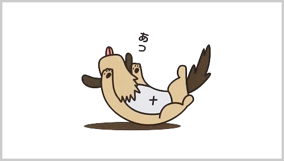
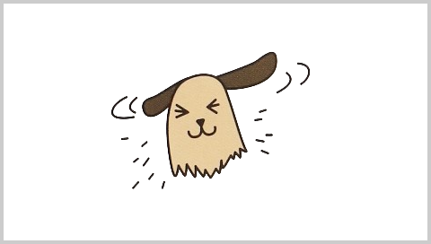
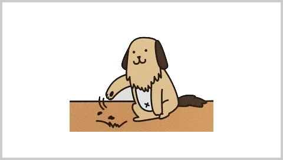
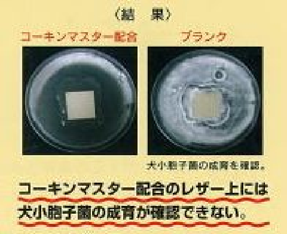
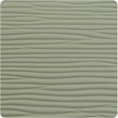
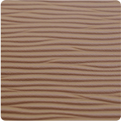
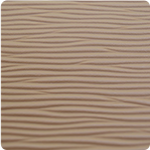
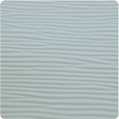
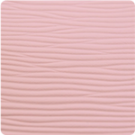
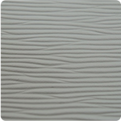

やわらかな素材でペットの身体にやさしく、
抗菌仕様だから簡単お手入れで清潔に保てます。
ペットも人も、ともに快適に過ごすことを
考え抜いた新素材の畳です。
Recommendationわんにゃんスマイル畳はこんな方にお勧め！
- わんちゃん、ねこちゃんがフローリングでよく足をすべらしている
- 抜け毛や餌の食べこぼし等の掃除に苦労している
- 爪を研ぐのですぐに傷がついてしまう
- 小さな子どもがいるので、不衛生にしたくない
Pointわんにゃんスマイル畳の特徴
-

- 01ペットが滑らない安全な畳
-
「クッション性があって滑らない」ペットが元気に走り回っても安心の素材。
ペットの足や腰に負担が少なく、ケガの予防につながります。
やわらかな感触で人の座り心地も◎。人とペットが一緒にくつろげる新発想畳です。
-

- 02お掃除らくらく！
- 「ペットの毛がからまったり、水分を吸い込んだりしないサラサラ素材のわんにゃんスマイル畳。抜け毛や食べこぼしのお掃除も、さっと拭くだけでOK！お部屋をいつも清潔に保てます。
-
- 03抗菌加工で清潔です
-
わんにゃんスマイル畳は表面に「コーキンマスター」を施しています。
372種類以上の菌・カビに効果を発揮。悪臭やアレルギーの原因になる菌・カビの増殖を抑えます。お子さまがいるご家庭にもオススメです。 イデアテックスジャパン(株)調べ。本データは、特定条件下で得られた測定値の代表例です。
抗菌・防カビ剤「コーキンマスター」はイデアテックスジャパン(株)の登録商標です。
-

- 04引っ掻いても傷が付きにくい
-
室内ペットのお悩みのひとつ、畳やフローリングのひっかきキズ。
わんにゃんスマイル畳は摩耗に強いレザー生地なので、爪の跡などがつきにくく、きれいに使い続けることができます。
Did You Know?犬小胞子菌をご存知ですか？
- 犬小胞子菌は主に犬・猫に感染するカビですが、ペットから人間への感染例も報告されています。
- 犬・猫の皮膚炎はダニやアレルギーのほかにカビも原因の一つです。カビが引き起こす皮膚炎の中では「犬小胞子菌」が最も多い感染率といわれています。
コーキンマスターの犬小胞子菌に対する増殖抑制効果の確認実験
コーキンマスターとは、抗菌抗カビ剤のことで 耐性菌ができにくい複合系で様々な実験の結果372菌種以上に抗菌・防カビ・防藻効果を発揮、 またハロゲンフリー（フッ素、塩素、臭素、ヨウ素、アスタチンを含まない、含有されていない）で非水溶性のため 環境への安全性に優れ、社団法人繊維評価技術協議会によるＳＥＫ規格、抗菌製品技術協議会のＳＩＡＡ規格の安全性合格基準もクリアーしている安全性にも優れた抗菌抗カビ剤です。
そして犬小胞子菌の繁殖の代表実験でもコーキンマスター配合のレザー上には犬小胞子菌の成育が確認できないと報告されています。

Type Of Tatami畳のタイプ
色はグリーン、ブラウン、ダークベージュ、ホワイトブルー、ホワイトピンク、ホワイトグレーの６種類があります。
- グリーン
- ブラウン
- ダークベージュ
- ホワイトブルー
- ホワイトピンク
- ホワイトベージュ
料金
各カラー：15,800円～/1枚
※わんにゃんスマイルは山中産業株式会社の登録です。